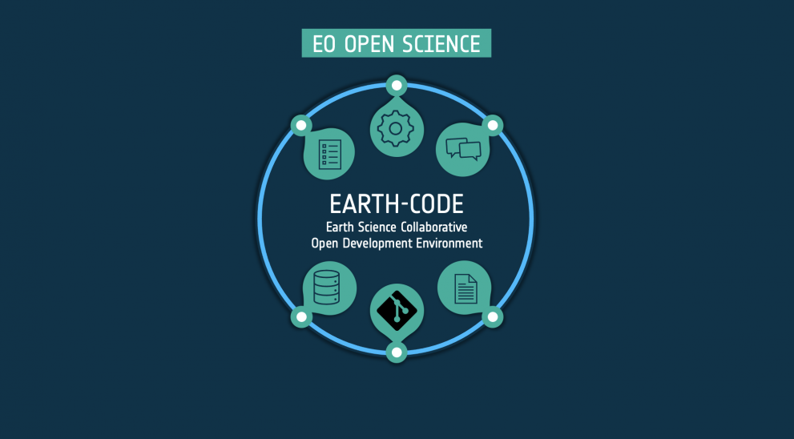

This portal shall provide an entry point to the collaborative
development tools and resources, as well as access to community
guidelines and open documentation to help researchers adopt FAIR
principles in their scientific practice.
Through community and capacity building focused on Open Science, the
activity shall promote a trusted collaborative experience of
conducting Earth system science.

For all components (technology, community, partnerships), the
Reproducible Open Science Environment can rely on elements developed
as part of other FutureEO activities and on readily available
operational services provided by Member States’ public and industrial
facilities, including interoperable building blocks, platform
services, Open Science capacity building, scientific communication,
and international cooperation.
After signup, you will be able to access your workspace and create
your first experiment. If your input data, workflow file and resulting
product(s) are located on supported platforms, you can combine them
and add some additional project metadata. After publishing your
experiment, EarhCODE will copy and securly store the data for you and
generate an unique DOI.
EarthCODE will let you browse projects, experiments and resulting
products created by the entire community. You will be able to search
by title, keywords, publication date and other
metadata.
Each experiment published on EarthCODE will be reproducible (to
varying degrees). If you choose to reproduce a previous experiment,
all the available information (e.g. input data, source code, required
environment) will be pre-loaded, allowing you to either re-run the
experiment with the same parameters, or changing them to build your
own experiment upon it.